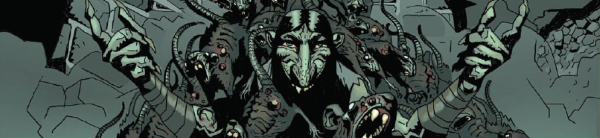

As Fink Angel appeared as a surprise member of the Angel Gang, so Ratfink appeared as the surprise offspring of Fink. Another hellish danger to Helltrekkers, and another cunning evil of the Cursed Earth often underestimated by the Judges.
Art by Tiernen Trevallion
| Story Title | Parts | Pages | w indicates a wraparound coverCovers | Year(s) | Issues | Writer | Artist | Colourist | Letterer |
|---|---|---|---|---|---|---|---|---|---|
From Judge DreddRatfink | 5 | 52 | M273: Simon Parr M276: Simon Parr 2 | 2008 | Reprints: M328 (supplement)M273-M277 | John Wagner | Peter Doherty | <-- | Annie Parkhouse |
From Judge DreddRatfink's Revenge | 3 | 30 | 330: Mark Harrison 1 | 2012 | M328-M330 | Alan Grant | Tiernen Trevallion | <-- | Annie Parkhouse |
| The Big Empty | 1 | 5 | 0 | 2016 | FCBD6 | Matt Smith | Joelle Jones | [b&w] | Sam Gretton |
| year | episodes | pages |
| 2002 | 0 | 0 |
| 2003 | 0 | 0 |
| 2004 | 0 | 0 |
| 2005 | 0 | 0 |
| 2006 | 0 | 0 |
| 2007 | 0 | 0 |
| 2008 | 5 | 52 |
| 2009 | 0 | 0 |
| 2010 | 0 | 0 |
| 2011 | 0 | 0 |
| 2012 | 3 | 30 |
| 2013 | 0 | 0 |
| 2014 | 0 | 0 |
| 2015 | 0 | 0 |
| 2016 | 1 | 5 |
| 2017 | 0 | 0 |
| 2018 | 0 | 0 |
| 2019 | 0 | 0 |
| 2020 | 0 | 0 |
| 2021 | 0 | 0 |
| 2022 | 0 | 0 |